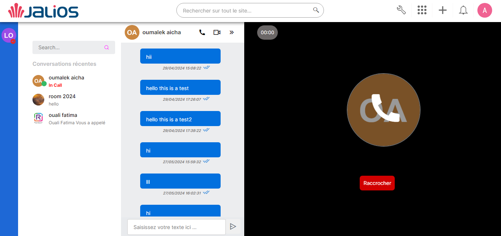
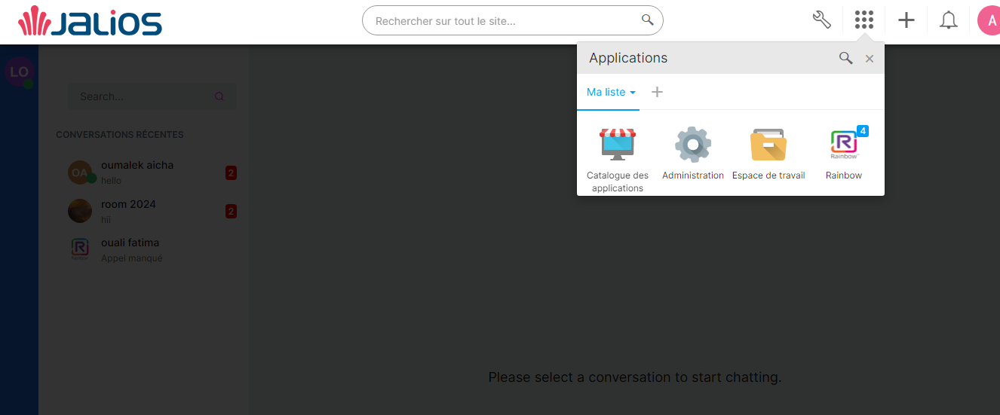

RainbowPlugin Documentation
Sommaire
Introduction
Bienvenue dans notre plugin Rainbow, un outil puissant conçu pour intégrer les fonctionnalités de l'API Rainbow dans votre application.
Rainbow est une plateforme de communication et de collaboration unifiée qui permet aux utilisateurs de se connecter, de communiquer et de collaborer de manière transparente.
Procédure d'Installation Standard de JCMS
Installez le plugin Rainbow en suivant la procédure standard d'installation des modules JCMS
Configuration du Plugin
Après l'installation, Pour intégrer le plugin Rainbow à votre système JCMS, veuillez remplir le formulaire ci-dessous avec les informations d'authentification nécessaires :
Propriétés du Plugin :
Veuillez saisir votre application ID :
Ce champ nécessite l'ID d'application fourni par Rainbow pour identifier votre intégration. Veuillez saisir cet ID dans le champ prévu à cet effet.
Veuillez saisir votre secret key :
Saisissez ici la clé secrète fournie par Rainbow pour sécuriser les communications entre votre système JCMS et l'API Rainbow.
Une fois ces informations remplies, cliquez sur le bouton "Enregistrer" pour appliquer les configurations.
Utilisation :
Premièrement, vous devez l'ajouter à votre liste d'applications
Un formulaire d'inscription s'affichera, dans lequel vous devrez saisir votre adresse e-mail et votre mot de passe.
Fonctionnalités :
1 Page Principale
La page principale de Rainbow affiche toutes les conversations de l'utilisateur, organisées par ordre chronologique. Chaque conversation est présentée avec des indications sur les nouveaux messages non lus pour une gestion efficace des discussions actives.
En outre, cette interface fournit le statut de présence de chaque contact, indiquant si un contact est en ligne, hors ligne ou indisponible. Cela permet aux utilisateurs de choisir le moment optimal pour initier une conversation.
2 Messagerie Instantanée
Lorsque vous cliquez sur une conversation dans la messagerie instantanée, tous les messages échangés s'affichent dans l'ordre chronologique.
Il existe deux types de conversations :
-
One-to-One :
- Les informations de l'utilisateur, y compris son nom, avatar , sont affichées.
- Vous pouvez envoyer un message directement depuis cette interface.
- Vous avez la possibilité de démarrer un appel vocal ou vidéo avec l'utilisateur.
-
Bubble (groupe) :
- L'interface affiche les messages avec le nom de l'expéditeur et son avatar.
- L'interface affiche les organisateurs de la discussion et les membres de la bulle.
- Vous pouvez envoyer un message directement depuis cette interface.
- Vous pouvez également accéder à la conversation individuelle de chaque membre, facilitant ainsi la gestion des conversations respectives.
3 Appels Vocaux et Vidéo
Pour garantir le bon fonctionnement des appels vocaux et vidéo avec le plugin Rainbow, assurez-vous que votre serveur est configuré pour utiliser HTTPS. Les appels vocaux et vidéo nécessitent une connexion sécurisée pour assurer la confidentialité des communications et la sécurité des données échangées. Assurez-vous également que votre application dispose des autorisations nécessaires pour accéder à la caméra et au microphone de l'utilisateur.
-
Appel Vocal :
Faire un appel vocal
-
Démarrer un appel vocal :
Cliquez sur l'icône de téléphone pour initier un appel vocal. Assurez-vous que votre microphone et haut-parleurs fonctionnent correctement. Une fois l'appel lancé, vous verrez des options raccrocher l'appel.

-
En cours d'appel :
Pendant l'appel, vous pouvez voir la durée de l'appel, envoyer des messages et raccrocher l'appel.
Recevoir un appel vocal
-
Notification d'appel entrant :
Lorsque vous recevez un appel, une notification apparaît sur votre écran. Vous verrez le nom et l'avatar du contact qui vous appelle.
-
Répondre à l'appel :
Cliquez sur le bouton de réponse pour accepter l'appel. Assurez-vous que votre microphone et haut-parleurs sont configurés correctement.
-
Refuser l'appel :
Lorsque vous souhaitez refuser l'appel, cliquez sur le bouton de Refuser. L'appel sera effectivement refusé
-
Appels Vidéo
Faire un appel Appels Vidéo
-
Démarrer un appel vidéo :
Cliquez sur l'icône de caméra pour initier un appel vidéo. Assurez-vous que votre caméra et microphone fonctionnent correctement. Une fois l'appel lancé, vous verrez des options pour raccrocher l'appel.
-
En cours d'appel :
Pendant l'appel vidéo, vous pouvez voir la vidéo du contact avec qui vous parlez, votre propre vidéo, la durée de l'appel, envoyer des messages et raccrocher l'appel.

Recevoir un appel vidéo
-
Notification d'appel entrant :
Lorsque vous recevez un appel, une notification apparaît sur votre écran. Vous verrez le nom et l'avatar du contact qui vous appelle.
-
Répondre par vidéo :
Cliquez sur l'icône de caméra pour répondre à l'appel vidéo. Assurez-vous que votre caméra et microphone fonctionnent correctement. Vous serez connecté en vidéo avec le contact appelant.
-
Répondre par audio :
Cliquez sur l'icône d'audio pour répondre à l'appel en utilisant seulement l'audio. Votre vidéo ne s'affichera pas dans l'interface d'appel.
-
Refuser l'appel :
Lorsque vous souhaitez refuser l'appel, cliquez sur le bouton de Refuser. L'appel sera effectivement refusé
Notifications des Appels
Lorsque vous recevez un appel sortant, une notification s'affiche dans la zone des messages. Vous pouvez voir qui vous appelle
Si vous manquez un appel entrant, une notification d'appel manqué s'affiche également dans la zone des messages. Vous pouvez rappeler la personne ou envoyer un message pour suivre.
Ces notifications vous permettent de gérer facilement vos appels et de rester informé des interactions importantes.
4 Notifications
si un utilisateur quitte le plugin, il peut savoir s'il y a eu un appel ou un message par le raccourci.
